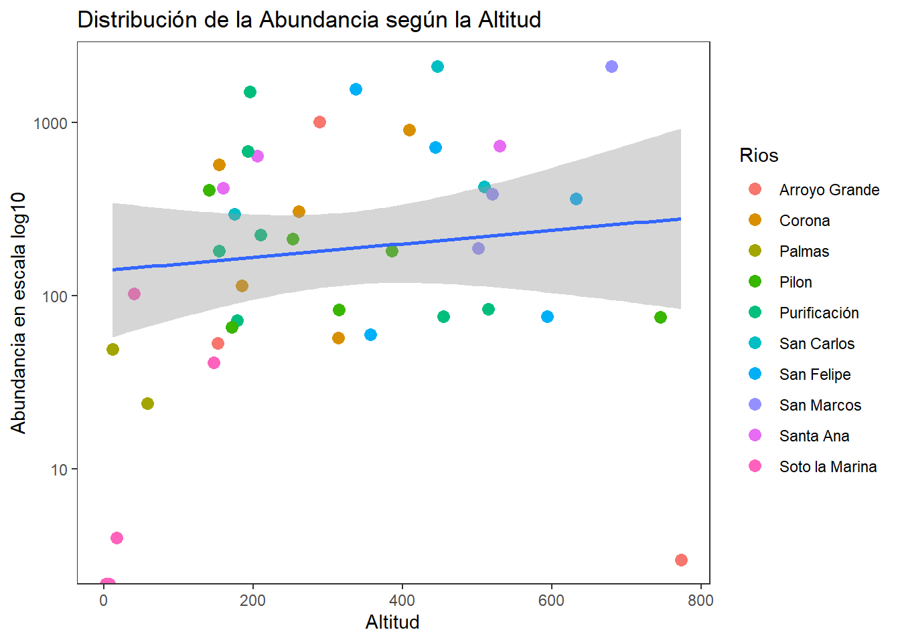

library(readxl)
library(dplyr)
library(kableExtra)
library(tidyverse)
library(lattice)
library(ellipse)
library(corrplot)
require(SciViews)
library(psych)
library(GGally)
require(gclus)
require(SciViews)
require(ade4)
require(vegan)
require(stats)
library(ggplot2)
library(pheatmap)
library("gplots")
library(gridExtra)
library(factoextra)
library(reshape)
library(ggrepel)
library(reshape2)
library(ggforce)
library(car)
library(MASS)
library(candisc)
library(mvnormtest)
source("funciones.r")
library(caret)
DOI: https://doi.org/10.1007/s10641-021-01158-9
Contexto de la base de datos
Las bases de datos están compuestas por dos archivos de Excel que contienen datos biológicos y ambientales. En la base de datos biológicos, se encuentran columnas de 90 especies y en las filas las localidades, estas están identificadas con las iniciales M (montaña), P (llanura) y RM (desembocadura de río), indicando la altitud de cada sitio, y están numeradas del 1 al 43. La base de datos ambientales esta constituida por 23 variables ambientales de las cuales 7 variables son cuantitativas y 16 cualitativas. Además, se midieron 9 parámetros de calidad de agua en cada sitio.
Introducción
La comprensión de los patrones de diversidad y distribución de las comunidades acuáticas es fundamental al abordar los sistemas fluviales, porque son determinantes para la ecología acuática contemporánea. Estos patrones han reflejado la interacción entre factores bióticos y abióticos, así como han servido como indicadores de la salud ecosistémica de integridad hidrológica (Ospina et al., 2023). Los peces son uno de los grupos más diversos y ecológicamente significativos de la fauna que habita el ecosistema. La variación longitudinal crea, de hecho, gradientes ambientales que modelan la estructura de las comunidades de peces, tanto en los sistemas neotropicales como en los templados (Ospina et al., 2023; Torruco et al., 2017). Sin embargo, la incertidumbre de los controladores de estos sistemas con relación a la dimensionalidad de las variables ambientales y biológicas sólo puede abordarse a partir de un análisis capaz de juntar disímiles informaciones en patrones ecológicos significativos. Es por esta razón que se emplea la estadística multivariada.
Como buena parte de la ciencia moderna, la ecología ha evolucionado de enfoques más sencillos hacia el uso de modelos estadísticos multivariantes. En este caso, la multi-variedad proporciona a los ecólogos la posibilidad de responder a preguntas complejas sobre la estratificación de la comunidad (De Catalunya et al., 2018). La evolución posterior, en el contexto del software estadístico en general y del lenguaje R en particular, ha permitido que un número cada vez mayor de ecólogos formule y analice hipótesis complejas y multivariantes dentro de flujos de trabajo reproducibles y personalizados (González, 2017).
En el presente ejercicio, se empleará una base de datos derivada del estudio de Ruiz-Campos et al. (2021), donde se analiza la diversidad y distribución longitudinal de las comunidades de peces en la cuenca del río Soto La Marina, al noreste de México. A través del análisis de datos ambientales y biológicos recolectados en 43 sitios, los autores identifican tres ensamblajes principales asociados a zonas fisiográficas (montaña, planicie y desembocadura), y exploran cómo variables como salinidad, conductividad, turbidez y estructura del hábitat explican la composición de la ictiofauna a lo largo del gradiente ambiental. Se realizará un proceso básico de preparación de datos, seguido de visualizaciones exploratorias, a su vez como parte del enfoque multivariado, se implementarán análisis de Componentes Principales (PCA) para explorar gradientes ambientales y Escalamiento Multidimensional No Métrico (NMDS) para evaluar la estructuración de las comunidades ícticas en función de la composición de especies. Todos los análisis serán desarrollados mediante el software estadístico RStudio. Con ello, se busca identificar tendencias espaciales, relaciones entre variables y patrones ecológicos relevantes en la diversidad de peces a lo largo del gradiente longitudinal del sistema fluvial.
Objetivos
Objetivo General:
Explorar la diversidad y distribución longitudinal de las comunidades de peces en un sistema fluvial, utilizando herramientas de análisis multivariado y visualización de datos, con el propósito de identificar patrones ecológicos asociados a gradientes ambientales.
Objetivos Específicos:
Describir los gradientes ambientales presentes a lo largo del sistema fluvial y su relación con la variación en la composición de especies de peces.
Comparar los patrones espaciales de las comunidades ícticas mediante distintos métodos de visualización y análisis multivariado.
Pregunta de análisis:
¿Cómo varía la composición de especies de peces entre los sitios de muestreo y qué variables ambientales se asocian con esas diferencias?
Diagrama de flujo

Librerías requeridas
Base de datos
# Leer la base de datos
biol <- read_excel("peces marinos méxico_biológicos.xlsx", sheet = "Hoja1", col_names = TRUE)
amb <- read_excel("peces marinos méxico_ambientales.xlsx", sheet = "Hoja1", col_names = TRUE)# Convertir de formato largo a ancho los datos biológicos
largo_biol <- biol %>%
pivot_longer(cols = 2:90, # Seleccionamos las columnas de especies
names_to = "Especie", # Nueva columna con los nombres de las especies
values_to = "Abundancia") # Nueva columna con los valores de abundancia# Convertir de formato largo a ancho los datos ambientales
largo_amb <- amb %>%
pivot_longer(cols = 2:38, # Seleccionamos las columnas de especies
names_to = "Variables", # Nueva columna con los nombres de las especies
values_to = "Valores")Abundancia por sitios
largo_biol <- largo_biol %>%
group_by(Sitios) %>%
mutate(Abundancia_Total_Sitio = sum(Abundancia, na.rm = TRUE)) %>%
ungroup()
# Resumen de la base de datos original (seis primeras filas)
head(largo_biol) %>%
kbl() %>%
kable_classic(full_width=F)| Sitios | Especie | Abundancia | Abundancia_Total_Sitio |
|---|---|---|---|
| 17M | Hypanus sabinus | 0 | 95 |
| 17M | Atractosteus spatula | 0 | 95 |
| 17M | Elops saurus | 0 | 95 |
| 17M | Megalops atlanticus | 0 | 95 |
| 17M | Albula vulpes | 0 | 95 |
| 17M | Anguila rostrata | 0 | 95 |
# Generar una nueva columna con valores abreviados en biol
largo_biol <-
largo_biol %>%
mutate(Abrev = abbreviate(Especie, minlength = 4))# Unir bases de datos
biol_amb <-
amb %>%
left_join(largo_biol, by= "Sitios")Taxones más abundantes
La Tabla 1 muestra las 30 especies más abundantes en los diferentes ríos muestreados. Se observa que la especie Poecilia mexicana es la más abundante con un total de 5.573 registros, seguida de la especie Astyanax mexicanus con 4.003 registros, indicando que son especies muy comunes en los sitios de estudio.
# Seleccionar los 15 taxones más abundantes
Abundantes <- largo_biol %>%
group_by(Especie, Abrev) %>% # Agrupar por especie y abreviatura
summarise(Abundancia_Total = sum(Abundancia, na.rm = TRUE), .groups = "drop") %>% # Eliminar el agrupamiento
arrange(desc(Abundancia_Total)) %>% # Ordenar de mayor a menor
slice_head(n = 30) # Seleccionar los 15 taxones más abundantes
# Visualizar tabla
head (Abundantes) %>%
kbl() %>%
kable_classic(full_width=F)| Especie | Abrev | Abundancia_Total |
|---|---|---|
| Poecilia mexicana | Pclm | 5573 |
| Astyanax mexicanus | Astm | 4003 |
| Herichthys cyanoguttatus | Hrcc | 1616 |
| Gambusia regani | Gmbr | 1519 |
| Poecilia formosa | Pclf | 1222 |
| Notropis aguirrepequeñoi | Nagñ | 996 |
Resumen estadístico de la base de datos biológica
La Tabla 2 muestra un resumen estadístico de los datos biológicos en el sitio de estudio. Se puede observar que el sitio 35M destaca con la mayor abundancia media (~24) y el valor máximo más alto (1543), por el contrario, el sitio 1M tiene la menor abundancia media (0.14) y el máximo más bajo (10). La desviación estándar (SD) refleja la variabilidad en la abundancia dentro de cada sitio. Sitios como 35M y 26M muestran una alta variabilidad (SD de 167.5 y 150.5, respectivamente), Por otro lado, sitios como 1M y 9P tienen una variabilidad baja (SD de 1.10 y 1.77).
# Resumen estadístico de la base biológica
resumen_biologico <- largo_biol %>%
group_by(Sitios) %>% # Agrupar por sitio
summarise(
Abundancia_Media = mean(Abundancia, na.rm = TRUE),
Abundancia_Min = min(Abundancia, na.rm = TRUE),
Abundancia_Max = max(Abundancia, na.rm = TRUE),
Abundancia_SD = sd(Abundancia, na.rm = TRUE),
.groups = "drop" # Evita mensajes sobre agrupación
)
head(resumen_biologico) %>%
kbl() %>%
kable_classic(full_width=F)| Sitios | Abundancia_Media | Abundancia_Min | Abundancia_Max | Abundancia_SD |
|---|---|---|---|---|
| 10P | 0.8426966 | 0 | 20 | 3.243521 |
| 11M | 2.0337079 | 0 | 79 | 9.898863 |
| 12M | 0.8764045 | 0 | 38 | 5.202316 |
| 13M | 0.9887640 | 0 | 32 | 4.427431 |
| 14M | 2.3932584 | 0 | 106 | 13.558474 |
| 15P | 0.9213483 | 0 | 20 | 3.049682 |
Resumen estadístico de la base de datos ambiental
En la Tabla 3 muestra un resumen estadístico de los datos ambientales en el sitio de estudio. Se observa que el pH muestra una media de 7.51, con valores que oscilan entre 6.5 y 8.3, lo que indica un ambiente predominantemente neutro a ligeramente alcalino. La temperatura del agua tiene una media de 27.36°C. La conductividad, con una media de 641.39 µS/cm y un máximo de 1655 µS/cm, refleja diferencias en la concentración de iones disueltos, posiblemente relacionadas con la presencia de sales u otros compuestos. El oxígeno disuelto, con una media de 6.66 mg/L, muestra una amplia variabilidad (desde 1.2 mg/L hasta 24.9 mg/L), lo que podría indicar diferencias en la calidad del agua y la actividad fotosintética. Los nutrientes como nitritos (NO₂), nitratos (NO₃) y amonio (NH₄⁺) presentan concentraciones bajas en general, con medias de 0.02 mg/L, 0.5 mg/L y 1.47 mg/L, respectivamente, lo que sugiere una limitada contaminación por compuestos nitrogenados. Los fosfatos, con una media de 0.21 mg/L, también indican bajos niveles de contaminación por fósforo. En cuanto a la varianza, la conductividad presentó los valores más altos (140964.03 µS/cm).
# Selecciona solo las variables ambientales de interés
variables_seleccionadas <- amb %>%
dplyr::select(`pH`, `Water temperature`, `Conductivity`,
`Salinity`, `Transparency`, `Oxygen`,
`Carbon Dioxide`, `Alkalinity`, `NO2`,
`NO3`, `Ammonium`, `Hardness`,
`Phosphates`, `TDS`)
# Resumen estadístico de las variables seleccionadas
resumen_ambiental <- variables_seleccionadas %>%
summarise(across(everything(),
list(Media = ~ round (mean(., na.rm = TRUE), 2),
Minimo = ~ round (min(., na.rm = TRUE), 2),
Maximo = ~ round (max(., na.rm = TRUE), 2),
DE = ~ round (sd(., na.rm = TRUE), 2),
Varianza = ~ round (var(., na.rm = TRUE), 2),
Rango = ~ round (max(., na.rm = TRUE) - min(., na.rm = TRUE), 2),
Q1 = ~ round (quantile(., probs = 0.25, na.rm = TRUE), 2),
Q2 = ~ round (quantile(., probs = 0.50, na.rm = TRUE), 2),
Q3 = ~ round (quantile(., probs = 0.75, na.rm = TRUE), 2)))) %>%
pivot_longer(cols = everything(),
names_to = c("Variable", "Estadistico"),
names_sep = "_") %>%
pivot_wider(names_from = "Estadistico", values_from = "value")
resumen_ambiental %>%
kbl() %>%
kable_classic()| Variable | Media | Minimo | Maximo | DE | Varianza | Rango | Q1 | Q2 | Q3 |
|---|---|---|---|---|---|---|---|---|---|
| pH | 7.51 | 6.50 | 8.30 | 0.46 | 0.22 | 1.80 | 7.20 | 7.55 | 7.90 |
| Water temperature | 27.36 | 16.90 | 39.00 | 4.67 | 21.80 | 22.10 | 25.00 | 28.00 | 29.00 |
| Conductivity | 641.39 | 231.00 | 1655.00 | 375.45 | 140964.03 | 1424.00 | 398.12 | 495.50 | 657.12 |
| Salinity | 3.04 | 0.00 | 26.00 | 4.86 | 23.58 | 26.00 | 2.00 | 2.00 | 2.00 |
| Transparency | 79.00 | 0.79 | 600.00 | 92.51 | 8558.78 | 599.21 | 31.25 | 64.50 | 82.00 |
| Oxygen | 6.66 | 1.20 | 24.90 | 5.04 | 25.42 | 23.70 | 3.67 | 5.92 | 7.39 |
| Carbon Dioxide | 22.75 | 0.00 | 103.50 | 19.73 | 389.32 | 103.50 | 13.88 | 20.00 | 25.00 |
| Alkalinity | 192.58 | 0.00 | 410.00 | 73.73 | 5436.05 | 410.00 | 135.50 | 182.10 | 233.50 |
| NO2 | 0.02 | 0.00 | 0.20 | 0.04 | 0.00 | 0.20 | 0.00 | 0.01 | 0.02 |
| NO3 | 0.51 | 0.00 | 3.65 | 0.74 | 0.55 | 3.65 | 0.03 | 0.16 | 0.74 |
| Ammonium | 1.49 | 0.00 | 5.00 | 1.55 | 2.40 | 5.00 | 0.32 | 1.09 | 1.98 |
| Hardness | 290.69 | 92.00 | 1000.00 | 195.62 | 38266.72 | 908.00 | 172.25 | 238.00 | 350.00 |
| Phosphates | 0.21 | 0.00 | 0.75 | 0.19 | 0.03 | 0.75 | 0.05 | 0.17 | 0.34 |
| TDS | 362.26 | 100.00 | 998.00 | 234.19 | 54846.73 | 898.00 | 184.00 | 302.50 | 480.75 |
biol_abrev <- largo_biol %>%
dplyr::select(Sitios, Abrev, Abundancia) %>%
pivot_wider(names_from = Abrev, values_from = Abundancia) #convertir a formato anchobiol_log <- largo_biol %>%
dplyr::select(Sitios, Abrev, Abundancia) %>%
pivot_wider(names_from = Abrev, values_from = Abundancia)
columnas_numericas <- names(biol_log)[2:50]
# Iterar sobre los nombres de las columnas
for (columna in columnas_numericas) {
# Manejar los NAs: reemplazarlos con 0 antes de la suma condicional
biol_log[[columna]][is.na(biol_log[[columna]])] <- 0
# Identificar los valores cero y sumar 1 solo a ellos
biol_log[[columna]][biol_log[[columna]] == 0] <- biol_log[[columna]][biol_log[[columna]] == 0] + 1
# Aplicar el logaritmo común (log10) a la columna
biol_log[[columna]] <- log10(biol_log[[columna]])
}Exploración en Excel
La Figura 1 muestra los valores promedio de conductividad, dureza y sólidos disueltos totales (TDS) por Río, con sus respectivas desviaciones estándar. Los puntos rojos representan la abundancia total de peces por Río. Se observa que, en algunos sitios como San Carlos y Santa Ana, los altos valores de conductividad podrían estar asociados con una mayor abundancia de peces, pero esta relación no se mantiene igual en todos los sitios, lo que indica que otros factores ambientales o ecológicos también influyen en la distribución y abundancia de peces.
Figura 1. Relación entre variables ambientales del agua y la abundancia total de peces por Río.
La figura 2 muestra la abundancia de las seis principales especies de peces por Río. Se observa que Pclm y Astm presentan las mayores abundancias en la mayoría de los Ríos, destacándose especialmente en San Marcos y San Felipe. El taxón Gmbr muestra una abundancia particularmente alta en Arroyo Grande, lo que indica una posible especialización o adaptación local, ya que su presencia en los demás sitios es baja o nula. Estas diferencias en abundancia entre taxones y sitios podrían reflejar gradientes ambientales.

Figura 2. Distribución de abundancia de las 6 principales especies de peces por Río.
Figura de elipises con las especies más abundantes
La Figura 1 representa las relaciones entre las especies de peces evaluadas. En su mayoría, se observan correlaciones positivas aunque no altamente significativas. Por ejemplo, la abundancia total tiene correlación positiva con las especies Astyanax mexicanus (76%), Herichthys cyanoguttatus (71%) y Poecilia mexicana (68%). Por otro lado, la mayoría de las correlaciones negativas fueron leves, lo que indica que la abundancia de una especie no parece verse fuertemente afectada por la presencia de otra.
d_elipses <- read_xlsx("datos_PCA.xlsx", sheet = "Hoja2")
# Transformación logarítmica de las especies más abundantes
biol2 <- log(d_elipses[, 40:52] + 1)
# Matriz de correelación con las variables transformadas
M <- cor(biol2, use = "complete.obs")# Elipses con colores
corrplot(M, method = "ellipse")Figura de elipses de los datos ambientales fisicoquímicos
La Figura 2 representa las relaciones entre las variables ambientales evaluadas. Se observa que la relación más fuerte se observó entre las variables Profundidad media de la zona muestreada (Adotsa) y Profundidad máxima (Mxmd) (96%), Salinidad (Slnt) y Anchura de la superficie del agua (Wotws) (84%), y Conductividad (Cndc) y Sólidos disueltos totales (TDS) (77%). Lo que nos indica que estás variables estarán correlacionadas al estar en valores altos o bajos en los sitios. Por otro lado, no se observan relaciones negativas fuertes entre las varibales ambientales.
M2 <- cor(d_elipses[, c(4:8, 25:29, 33, 36, 39)]) # Matriz de correlación
# Elipses con colores
corrplot(M2, method = "ellipse")Figura de elipses de los datos ambientales y biológicos con las abundancias convertidas a logaritmo (log10)
La Figura 3 muestra las relaciones entre las especies de peces y las variables ambientales evaluadas. Se observaron relaciones fuertemente positivas entre el pH y la especie Gambusia sp. (77%), entre la Alcalinidad (Alkl) y Aplodinotus grunniens (76%), y entre Amonio (Ammn) y Herichthys cyanoguttatus (73%). Por otro lado, para la especie Gambusia regani se observaron relaciones negativas con las variables Adotsa, Mxmd, Wotws, Typs (Tipo de corriente) y Slnt. La abundanica total tuvo una relación positiva con las variables Ammn (53%) y TDS (52%) y una realción negativa con Alt2 (Altitud).
Mamb_biol <- cor(M2, M, "pairwise.complete.obs")
# matriz de elipses
corrplot(Mamb_biol, method = "ellipse")
Nueva columna con los ríos a los que pertenece cada sitio muestreado
biol_amb$Sitios = as.factor(biol_amb$Sitios)
biol_amb <- biol_amb %>%
mutate(Rios = case_when(
Sitios %in% c("1M", "2M", "3P") ~ "Arroyo Grande",
Sitios %in% c("4M", "5M", "6P", "7P", "8M") ~ "Corona",
Sitios %in% c("9P", "10P") ~ "Palmas",
Sitios %in% c("11M", "12M", "13M", "14M", "15P", "16P") ~ "Pilón",
Sitios %in% c("17M", "18M", "19P", "20M", "21P", "22P", "23P") ~ "Purificación",
Sitios %in% c("25M", "26M", "27P") ~ "San Carlos",
Sitios %in% c("28M", "29M", "30M", "31M", "32M") ~ "San Felipe",
Sitios %in% c("33M", "34M", "35M") ~ "San Marcos",
Sitios %in% c("36M", "37P", "38M") ~ "Santa Ana",
Sitios %in% c("39P", "40P", "41P", "42RM", "43RM") ~ "Soto la Marina",
TRUE ~ "Otro"
))Figuras de cajas y bigotes
# Convertir la variable pH a categórica
biol_amb <-
biol_amb %>%
mutate(pH_level = case_when(
pH <= quantile(pH, 1/3) ~ "Bajo",
pH <= quantile(pH, 2/3) ~ "Medio",
pH <= quantile(pH, 3/3) ~ "Alto",
))La Figura 4 muestra la distribución de las abundancias de peces en los diferentes ríos muestreados. San Carlos y Santa Ana tienen las medianas más altas, y no se superponen sus notches con las de ríos como Palmas o Soto la Marina. Esto indica diferencias significativas entre estos ríos en cuanto a la abundancia de peces. Por otro lado, Palmas exhibe la mediana más baja y una baja variabilidad, lo que sugiere un ecosistema más homogéneo y posiblemente menos favorable.
# Organización por nivel de magnitud
ggplot(d_elipses, aes(x = fct_reorder(Rios, Ab_Total),y=Ab_Total)) +
geom_boxplot(notch = T, aes(fill = Rios)) +
scale_y_log10() +
labs(x = "Ríos muestreados",
y = "Abundancia en escala log10",
fill = "Ríos muestreados") +
theme_bw() +
theme(
plot.title = element_text(hjust = 0.5, face = "bold", size = 14), # Centrar el título
axis.text.x = element_text(angle = 45, vjust = 1, hjust = 1) # Rotar nombres de ríos en 45°
) +
scale_fill_manual(values = c("blue", "orange", "red", "skyblue",
"green", "pink", "brown", "purple",
"turquoise", "salmon"))
Figuras multivaraidas de Cajas y bigotes
La Figura 5 muestra la distribución de la abundancia de peces (en escala log10) en relación con diferentes variables ambientales y según el río muestreado. El primer panel muestra la relación entre la abundancia y la profundidad promedio del sitio de muestreo; Soto la Marina presenta las mayores abundancias asociadas con mayor profundidad. El segundo panel muestra la relación entre la abundancia y la especie Poecilia mexicana; San Felipe presenta una alta abundancia en sitios donde esta especie está altamente presente. El tercer panel muestra la relación entre la abundancia y los sólidos disueltos totales; Soto la Marina y Corona presentan mayores medianas de abundancia asociadas con mayores valores de TDS.
# Figuras multivariadas de Cajas y bigotes
d_elipses <- as.data.frame(d_elipses)
ggplot(melt(d_elipses[,c(2,c(6,40,39,52))]), aes(x=variable, y=value)) +
geom_boxplot(aes(fill=Rios)) +
scale_y_log10() +
scale_fill_manual(values = c("blue", "orange", "red", "skyblue",
"green", "pink", "brown", "purple",
"turquoise", "salmon")) +
labs(x="",y="Abundancia en escala log10") +
facet_wrap(~ variable,scales="free") +
theme_bw()Regresión lineal entre la abundancia y la Altitud
La Figura 6 muestra una regresión lineal entre la abundancia total de peces y la altitud. Se puede observar un comportamiento lineal ligeramente positivo de las abundancias respecto a la altitud, donde a medida que va aumentanto la altitud, también tiende a aumentar la abundacia de peces. Además, se observa que la mayoría de las abundancias se agrupan en altitudes entre 100 y 500 metros.
#Figuras de regresión entre la abundancia y la Altitud
ggplot(d_elipses, aes(x = Alt2, y = Ab_Total) )+
geom_point(aes(color = Rios), size = 3) +
geom_smooth(method= "lm") +
scale_y_log10() +
labs(title = "Distribución de la Abundancia según la Altitud",
x = "Altitud",
y = "Abundancia en escala log10")+
theme_bw() +
theme(panel.grid = element_blank()
)

Regresión suavizada entre la abundancia y la Alcalinidad
La Figura 7 muestra una regresión suavizada entre la abundancia total de peces y la altitud. Se observa una relación de tipo no lineal, que al ser suavizada se ajusta en mejor medidad a los datos dispersos, con una mayor abundancia en las altitudes entre los 200 y 450 metros.
#Figuras de regresión entre la abundancia y la Altitud
ggplot(d_elipses, aes(x = Alt2, y = Ab_Total) )+
geom_point(aes(color = Rios), size = 3) +
geom_smooth(span = 0.8) +
scale_y_log10() +
labs(title = "Distribución de la Abundancia según la Altitud",
x = "Altitud",
y = "Abundancia en escala log10")+
theme_bw() +
theme(panel.grid = element_blank()
)Regresión lineal entre la abundancia y los Sólidos Disueltos Totales (TDS)
La Figura 8 muestra una regresión lineal entre la abundancia y los Sólidos Totales Disueltos. Se puede observar un comportamiento lineal ligeramente negativo de las abundancias respecto a TDS, donde a medida que va aumentando TDS, tienden a disminuir las abundancias de peces. Además, se observa que la mayoría de las abundancias se agrupan en en TDS entre 100 y 375 ppm.
# Regresion lineal entre la abundancia y la Conuductividad
ggplot(d_elipses, aes(x= TDS, y= Ab_Total) ) +
geom_point(aes(color = Rios), size = 3) +
geom_smooth(method= "lm")+
scale_y_log10() +
labs(title = "Relación de la Abundancia según los Sólidos Disueltos Totales",
x = "Sólidos Disueltos Totales",
y = "Abundancia en escala log10")+
theme(panel.grid = element_blank())Regresión suavizada entre la abundancia y los Sólidos Disueltos Totales
La Figura 9 muestra la variación de la abundancia de organismos en función de TDS en los diferentes Ríos muestreados. La curva de regresión suavizada sugiere que la abundancia es menor en valores cercanos a 0 ppm, pero también cuando estos valores son superiores 375 ppm.
# Regresion lineal entre la abundancia y el pH
ggplot(d_elipses, aes(x= TDS, y= Ab_Total) ) +
geom_point(aes(color = Rios), size = 3) +
geom_smooth(span = 0.8)+
scale_y_log10() +
labs(title = "Relación de la Abundancia según los Sólidos Disueltos Totales",
x = "Sólidos Disueltos Totales",
y = "Abundancia en escala log10")+
theme(panel.grid = element_blank())Grafico de burbujas
En la Figura 10 se puede observar que las abundancias estuvieron entre el nivel de pH 6.5 y 8.4, donde fuera de este rango no se registraron muchos individuos. La especie que mayores abundancias regitraron fueron: Pcml con 1500 individuos a un nivel de 8 y Gmbr con 1500 individuos en un nivel de 7.4. El río Arroyo Grande tuvo restringidas sus abundancias en el nivel de pH 6.7. Las abundancias de especies como Pclf, Hrcc y Astm se distribuyeron uniformemente entre los valores de pH 6.5 y 8.4 con menos de 500 individuos por sitio.
# Preparar breviar nombres de los grupos taxonómicos
biol_amb <- biol_amb %>%
arrange(desc(Abundancia)) %>%
mutate(
Abrev = fct_inorder(Abrev)
) %>%
filter(Abundancia>10)
# Crear el gráfico de burbujas
ggplot(biol_amb, aes(x = pH, y = Abrev, size = Abundancia, color = Rios)) +
geom_point(alpha = 0.7) +
# Líneas verticales para valores de pH
geom_vline(
xintercept = seq(6.4, 8.5, by = 0.5),
color = "black",
linetype = "dashed",
linewidth = 0.3
) +
# Escalas y ejes
scale_size(range = c(1, 8), name = "Abundancia") +
scale_x_continuous(
limits = c(6.4, 8.5),
breaks = seq(6.4, 8.5, by = 0.5),
expand = c(0, 0)
) +
scale_y_discrete(limits = rev) +
# Configuración del tema sin líneas de grid
theme_bw() +
theme(
panel.grid = element_blank(),
panel.border = element_rect(color = "black", fill = NA),
axis.ticks.y = element_blank(),
axis.text = element_text(size = 10),
axis.title.x = element_text(size = 12, face = "bold", margin = margin(t = 10)),
legend.position = "right",
legend.box = "vertical"
) +
labs(
x = "pH",
y = "Especies",
color = "Ríos"
) +
guides(
size = guide_legend(title = NULL,
override.aes = list(shape = 1,
color = "#377eb8",
stroke = 1.2)),
# Circulos de las Layers en la leyenda
color = guide_legend(title = NULL) # Eliminar el título de la leyenda para "group"
)
PCA
1. Ajuste de las bases de datos fisiqcoquimica (amb) y biológica (tax.hel)
d_elipses <- read_xlsx("datos_PCA.xlsx", sheet = "Hoja2")d_elipses$Rios = as.factor (d_elipses$Rios) # factor# Variables ambientales con transformación logarítmica
amb1=log10(d_elipses[,c(4:8, 25:29, 33, 36, 39)]+1)# Variables biológicas linealizadas - Taxones con Hellinger
tax.hel=decostand(d_elipses[,c(40:51)],"hellinger")2. PCA con paquete factoextra
La Tabla 4 muestra que la varianza acumulada de los dos primeros componentes principales es 0.66 o del 66%, lo cual indica una buena configuración de los datos para la ordenación del PCA.
# Variables ambientales con transformación logarítmica
amb1=log10(d_elipses[,c(4:8, 25:29, 33, 36, 39)]+1)
# PCA
pca1 <- prcomp(amb1)
summary(pca1)$"importance"[,1:2] %>%
kbl() %>%
kable_classic(full_width=F)| PC1 | PC2 | |
|---|---|---|
| Standard deviation | 0.7361981 | 0.3863051 |
| Proportion of Variance | 0.5178600 | 0.1425900 |
| Cumulative Proportion | 0.5178600 | 0.6604500 |
2.1. Contribución eje 1
La Figura 11 muestra aquellas variables más influyentes y que superen el umbral de contribución (por encima de la línea roja punteada) para el primer componente principal, donde Sólidos Disueltos Totales (TDS) fue la variable ambiental que más contribuyó, seguido de Profundidad Media de la Zona Muestreada (Adotsa), Anchura de la superficie del agua (Wotws), Profundidad máxima (Mxmd) y Altitud (Alt2). Esto indica que estas variables tienen un papel clave en la diferenciación de los sitios analizados y probablemente en la estructuración de las comunidades de peces.
# 2.1 Contribución del eje 1
fviz_contrib(pca1,choice="var",axes=1) +
labs(title = "Contribución de las variables en el PC1",
y = "Contribuciones (%)",
x= "Variables ambientales") +
theme_bw() +
theme(panel.grid = element_blank(), axis.text.x = element_text(angle = 90, hjust = 1, vjust = 0.5))3. PCA con ggplot
d_elipses <- d_elipses %>%
mutate(Zona = case_when(
Alt2 <= 10 ~ "Baja",
Alt2 >= 11 & Alt2 < 199 ~ "Medio",
Alt2 > 200 ~ "Alto"
))pca <- prcomp(tax.hel)3.1. Coordenadas de los sitios y el factor “coord.sit
# 4.1 Coordenadas de los sitios y el factor “coord.sit"
coord.sit <- as.data.frame(pca$x[,1:2]) # Coordenadas de los sitios
coord.sit$sitios <- rownames(coord.sit) # Crear una columna con nombres de los sitios
coord.sit$grp <- d_elipses$Zona # Adicionar columna de grupos por Zona3.2. Coordenadas de los taxones “coord.tax”
# 4.2 Coordenadas de los taxones “coord.tax”
coord.tax <- as.data.frame(pca$rotation[,1:2]) # Dos primeros ejes
coord.tax$especies <- rownames(coord.tax) # Insertar columna con nombres de las especies3.3. Coordenadas de las ambientales “coord.amb”
# 4.3 Coordenadas de las ambientales “coord.amb”
amb2 = envfit(pca,amb1)
coord.amb = as.data.frame(amb2$"vectors"$arrows[,1:2])
# coord.amb = as.data.frame(scores(amb2, "vectors"))
coord.amb$amb1 <- rownames(coord.amb) 3.4. Figura con de elipses por concavidades - geom_mark_hull
La Figura 12 muestra que a mayor altitud (grupo “Alto”), algunas variables biológicas como Poecilia mexicana y la abundancia total están más correlacionadas negativamente con el PC1, lo cual podría estar relacionado con cambios en la composición de especies o condiciones ambientales. En contraste, el grupo “Bajo” se separa claramente hacia la parte superior derecha, posiblemente por la influencia de variables como Salinidad y Conductividad.
# 4.4 Figura con de elipses por concavidades - geom_mark_hull
ggplot() +
# *Sitios
geom_text_repel(data = coord.sit,aes(PC1,PC2,label=row.names(coord.sit)),
size=4)+ # Muestra el cuadro de la figura
geom_point(data = coord.sit,aes(PC1,PC2,colour=grp),size=4)+
scale_shape_manual(values = c(21:25))+
# Taxones *valores de cero para caracteres de las flechas (arrow)
geom_segment(data = coord.tax,aes(x = 0, y = 0, xend = PC1, yend = PC2),
arrow = arrow(angle=0,length = unit(0,"cm"),
type = "closed"),linetype=0, size=0,colour = "red")+
geom_text_repel(data = coord.tax,aes(PC1,PC2,label=especies),colour = "red")+
# Ambiental
geom_segment(data = coord.amb,aes(x = 0, y = 0, xend = PC1/2.5, yend = PC2/2.5),
arrow = arrow(angle=22.5,length = unit(0.25,"cm"),
type = "closed"),linetype=1, size=0.6,colour = "blue")+
geom_text_repel(data = coord.amb,aes(PC1,PC2,label=row.names(coord.amb)),
colour = "#00abff")+
# Factor
geom_mark_hull(data=coord.sit, aes(x=PC1,y=PC2,fill=grp,group=grp,
colour=grp),alpha=0.15) +
geom_hline(yintercept=0,linetype=3,size=1) +
geom_vline(xintercept=0,linetype=3,size=1)+
guides(shape=guide_legend(title=NULL,color="black"),
fill=guide_legend(title=NULL))+
theme_bw()+theme(panel.grid=element_blank())3.5. Figura con de elipses por cada zona
En la figura Figura 13 se observo un agrupamiento de las variables biologicas en los tres sitios, donde se observaron diferencias entre las especies en zonas altas con las dos zonas restantes. Se observo una maypr variabilidad en el el grupo medio, debido a que es el que mayor largo y ancho poseen.
fviz_pca_ind(pca1, geom.ind = "point",
col.ind = d_elipses$Zona, # Colores por grupo - río
palette = c("#00AFBB", "#E7B800", "red"),
addEllipses = TRUE, ellipse.type = "confidence",
legend.title = "Zonas") +
labs(y = "PC2",
x= "PC1") +
theme_bw() +
theme(panel.grid = element_blank())NMDS
# Bases datos
spe <- read_excel("peces marinos méxico_biológicos.xlsx", sheet = "Hoja2", col_names = TRUE)
env <- read_excel("peces marinos méxico_ambientales.xlsx", sheet = "Hoja2",col_names = TRUE)spe <- spe %>%
select_at(vars(c(2:90)))
env <- env %>%
select_at(vars(c(2:38)))# Transformación de abundancias
spe.h = decostand(spe, "hellinger")
head(round(spe.h,3)) %>%
kbl() %>%
kable_classic(full_width=F)| Hyps | Atrs | Elps | Mgla | Albv | Angr | Myrp | Ancm | Anch | Brvg | Brvp | Drsc | Drsp | Hrnj | Opso | Cmpa | Cypl | Cypc | Dnde | Dsp. | Nagñ | Mxsc | Astm | Arpf | Amrm | Amrn | Ictl | Ictp | Isp. | Pylo | Synf | Prcp | Djsm | Mglc | Mmbm | Mndb | Hmrb | Strt | Fndg | Lcnp | Gmbsaf | Gmbsar | Gmbr | Gsp. | Pclf | Pcll | Pclm | Psp. | Xphv | Prnr | Cntu | Mycb | Srra | Lpmm | Msp. | Crnc | Crnh | Crnl | Olgs | Trcc | Trcf | Ltjnscm | Ltjnscy | Ltjg | Dpta | Dptr | Ecnm | Grrc | Anss | Arcp | Lgdr | Aplg | Brdc | Brdr | Cyna | Cynn | Lstx | Mcru | Pgnc | Hrcl | Hrcc | Orca | Drmm | Gbmd | Gbno | Scmr | Etrc | Achl | Symc |
|---|---|---|---|---|---|---|---|---|---|---|---|---|---|---|---|---|---|---|---|---|---|---|---|---|---|---|---|---|---|---|---|---|---|---|---|---|---|---|---|---|---|---|---|---|---|---|---|---|---|---|---|---|---|---|---|---|---|---|---|---|---|---|---|---|---|---|---|---|---|---|---|---|---|---|---|---|---|---|---|---|---|---|---|---|---|---|---|---|
| 0 | 0 | 0 | 0 | 0 | 0 | 0 | 0 | 0 | 0 | 0 | 0 | 0 | 0 | 0 | 0 | 0 | 0 | 0.205 | 0 | 0.000 | 0.000 | 0.580 | 0 | 0.000 | 0.000 | 0 | 0 | 0 | 0 | 0 | 0 | 0 | 0 | 0 | 0 | 0 | 0 | 0.397 | 0 | 0.000 | 0 | 0.000 | 0 | 0.229 | 0.000 | 0.470 | 0 | 0.000 | 0 | 0 | 0 | 0 | 0 | 0.384 | 0 | 0 | 0 | 0 | 0 | 0 | 0 | 0 | 0 | 0 | 0 | 0 | 0 | 0 | 0 | 0 | 0 | 0 | 0 | 0 | 0 | 0 | 0 | 0 | 0.000 | 0.205 | 0 | 0 | 0 | 0 | 0 | 0 | 0 | 0 |
| 0 | 0 | 0 | 0 | 0 | 0 | 0 | 0 | 0 | 0 | 0 | 0 | 0 | 0 | 0 | 0 | 0 | 0 | 0.000 | 0 | 0.000 | 0.000 | 0.000 | 0 | 0.000 | 0.000 | 0 | 0 | 0 | 0 | 0 | 0 | 0 | 0 | 0 | 0 | 0 | 0 | 0.000 | 0 | 0.000 | 0 | 0.000 | 0 | 0.000 | 0.000 | 0.000 | 0 | 0.000 | 0 | 0 | 0 | 0 | 0 | 0.000 | 0 | 0 | 0 | 0 | 0 | 0 | 0 | 0 | 0 | 0 | 0 | 0 | 0 | 0 | 0 | 0 | 0 | 0 | 0 | 0 | 0 | 0 | 0 | 0 | 0.877 | 0.480 | 0 | 0 | 0 | 0 | 0 | 0 | 0 | 0 |
| 0 | 0 | 0 | 0 | 0 | 0 | 0 | 0 | 0 | 0 | 0 | 0 | 0 | 0 | 0 | 0 | 0 | 0 | 0.000 | 0 | 0.000 | 0.000 | 1.000 | 0 | 0.000 | 0.000 | 0 | 0 | 0 | 0 | 0 | 0 | 0 | 0 | 0 | 0 | 0 | 0 | 0.000 | 0 | 0.000 | 0 | 0.000 | 0 | 0.000 | 0.000 | 0.000 | 0 | 0.000 | 0 | 0 | 0 | 0 | 0 | 0.000 | 0 | 0 | 0 | 0 | 0 | 0 | 0 | 0 | 0 | 0 | 0 | 0 | 0 | 0 | 0 | 0 | 0 | 0 | 0 | 0 | 0 | 0 | 0 | 0 | 0.000 | 0.000 | 0 | 0 | 0 | 0 | 0 | 0 | 0 | 0 |
| 0 | 0 | 0 | 0 | 0 | 0 | 0 | 0 | 0 | 0 | 0 | 0 | 0 | 0 | 0 | 0 | 0 | 0 | 0.000 | 0 | 0.258 | 0.279 | 0.238 | 0 | 0.037 | 0.000 | 0 | 0 | 0 | 0 | 0 | 0 | 0 | 0 | 0 | 0 | 0 | 0 | 0.000 | 0 | 0.000 | 0 | 0.037 | 0 | 0.000 | 0.000 | 0.774 | 0 | 0.000 | 0 | 0 | 0 | 0 | 0 | 0.000 | 0 | 0 | 0 | 0 | 0 | 0 | 0 | 0 | 0 | 0 | 0 | 0 | 0 | 0 | 0 | 0 | 0 | 0 | 0 | 0 | 0 | 0 | 0 | 0 | 0.000 | 0.445 | 0 | 0 | 0 | 0 | 0 | 0 | 0 | 0 |
| 0 | 0 | 0 | 0 | 0 | 0 | 0 | 0 | 0 | 0 | 0 | 0 | 0 | 0 | 0 | 0 | 0 | 0 | 0.000 | 0 | 0.457 | 0.216 | 0.389 | 0 | 0.000 | 0.000 | 0 | 0 | 0 | 0 | 0 | 0 | 0 | 0 | 0 | 0 | 0 | 0 | 0.000 | 0 | 0.000 | 0 | 0.000 | 0 | 0.000 | 0.000 | 0.760 | 0 | 0.052 | 0 | 0 | 0 | 0 | 0 | 0.000 | 0 | 0 | 0 | 0 | 0 | 0 | 0 | 0 | 0 | 0 | 0 | 0 | 0 | 0 | 0 | 0 | 0 | 0 | 0 | 0 | 0 | 0 | 0 | 0 | 0.000 | 0.117 | 0 | 0 | 0 | 0 | 0 | 0 | 0 | 0 |
| 0 | 0 | 0 | 0 | 0 | 0 | 0 | 0 | 0 | 0 | 0 | 0 | 0 | 0 | 0 | 0 | 0 | 0 | 0.000 | 0 | 0.579 | 0.155 | 0.251 | 0 | 0.000 | 0.063 | 0 | 0 | 0 | 0 | 0 | 0 | 0 | 0 | 0 | 0 | 0 | 0 | 0.000 | 0 | 0.137 | 0 | 0.000 | 0 | 0.000 | 0.097 | 0.669 | 0 | 0.000 | 0 | 0 | 0 | 0 | 0 | 0.000 | 0 | 0 | 0 | 0 | 0 | 0 | 0 | 0 | 0 | 0 | 0 | 0 | 0 | 0 | 0 | 0 | 0 | 0 | 0 | 0 | 0 | 0 | 0 | 0 | 0.000 | 0.313 | 0 | 0 | 0 | 0 | 0 | 0 | 0 | 0 |
1. Ordenación con NMDS - paquete vegan
Paso 1. Correr el NMDS y analizar la disitancia usada y el estrés
La distancia utilizada es la Bray-Curtis. El estrés es 0.13 (13%), que corresponde a una buena configuración del análisis multivariado.
# Escalamiento multidimensional "spe.nmds"
spe.mds <- metaMDS(spe.h,
distance = "bray",
trace = FALSE)
spe.mds
Call:
metaMDS(comm = spe.h, distance = "bray", trace = FALSE)
global Multidimensional Scaling using monoMDS
Data: spe.h
Distance: bray
Dimensions: 2
Stress: 0.1304401
Stress type 1, weak ties
Best solution was not repeated after 20 tries
The best solution was from try 18 (random start)
Scaling: centring, PC rotation, halfchange scaling
Species: expanded scores based on 'spe.h' Paso 2. Figuras del nmds con el paquete “vegan”
# 1. Figura con todas las especies
plot(spe.mds,type = "t",cex=1.2, # type="t" grafica sitios y especies
ylab="Dim 2", xlab="Dim 1", # main: Título de la figura
main = paste("nMDS/Estrés =",
round(spe.mds$stress, 3))) # spe.mds$stress: valor del estrés
abline(v=0, lty=2, col=4)
abline(h=0, lty=2, col=4)Figura del NMDS con el comando orditorp
# 2. Figura sin solapamiento de especies - comando "orditorp"
plot(spe.mds,type = "n",
display = c("sites", "species"), # type="n" sin texto.
ylab="Dim 2", xlab="Dim 1",
main = paste("nMDS/Estrés =", # R?tulo del título.
round(spe.mds$stress, 3)))
text(spe.mds, display="sites", # Grafica los sitios
cex=1, col="blue", lwd=1.5, pos=3)
ordi= orditorp(spe.mds, display = "species", # Grafica especies sin solapar
shrink = FALSE, col = "red", type="n",cex=1.2)
points(spe.mds, display = "sites", # Opcional - puntos de muestreo
cex = 0.6, col = "lightblue", lwd=1.5)
abline(h=0, lty=2, col=4)
abline(v=0, lty=2, col=4)Figura del NMDS con variables ambientales
# Insertar variables ambientales al nMDS
# Ambientales (env)
env1 = envfit(spe.mds,env)
env1
***VECTORS
NMDS1 NMDS2 r2 Pr(>r)
Alt1 -0.88247 -0.47037 0.6503 0.001 ***
Wrtrt -0.30220 0.95324 0.0345 0.527
Artm -0.24002 0.97077 0.0918 0.162
Adotsa 0.84416 0.53610 0.5020 0.002 **
Mxmd 0.79511 0.60646 0.4436 0.002 **
Wotws 0.99896 -0.04553 0.7832 0.001 ***
Wtrf -0.98484 0.17349 0.0029 0.883
Mrkn 0.90448 0.42651 0.1891 0.015 *
Pobcwwpr 0.08578 0.99631 0.0688 0.153
Pofaopiw -0.10753 0.99420 0.0499 0.364
Prcp 0.07398 0.99726 0.0528 0.233
Pror 0.14943 0.98877 0.0335 0.322
Pros 0.10889 0.99405 0.0306 0.546
Pbwg 0.04011 0.99920 0.0690 0.162
Pobws -0.33215 0.94323 0.0003 0.996
Pobwp -0.01697 0.99986 0.0531 0.221
Pobwrlt3 -0.47743 0.87867 0.0397 0.302
Prcd -0.23058 0.97305 0.0868 0.125
Qaqoaaftf 0.24126 0.97046 0.0029 0.912
Powtismotd -0.16570 0.98618 0.0507 0.234
Poafth 0.35829 0.93361 0.0811 0.152
Etwhaatcaqow 0.10070 0.99492 0.0361 0.345
Typs 0.99925 0.03874 0.1854 0.027 *
Alt2 -0.77413 -0.63303 0.4678 0.001 ***
pH 0.02335 -0.99973 0.0197 0.694
Cndc 0.94874 -0.31606 0.4211 0.001 ***
Slnt 0.97107 0.23879 0.7021 0.002 **
Trns 0.92481 -0.38044 0.3228 0.031 *
Oxyg 0.99161 0.12930 0.0022 0.946
CrbD -0.96793 -0.25122 0.0309 0.412
Alkl -0.96051 -0.27824 0.0082 0.861
NO2 0.76796 0.64049 0.0067 0.821
NO3 0.05935 -0.99824 0.0670 0.226
Ammn 0.62486 -0.78074 0.0245 0.619
Hrdn 0.54831 -0.83628 0.1515 0.056 .
Phsp -0.85814 -0.51341 0.0309 0.550
TDS 0.96199 -0.27308 0.3793 0.001 ***
---
Signif. codes: 0 '***' 0.001 '**' 0.01 '*' 0.05 '.' 0.1 ' ' 1
Permutation: free
Number of permutations: 999# 2. Figura sin solapamiento de especies - comando "orditorp"
plot(spe.mds,type = "n",
display = c("sites", "species"), # type="n" sin texto.
ylab="Dim 2", xlab="Dim 1",
main = paste("nMDS/Estrés =", # R?tulo del título.
round(spe.mds$stress, 3)))
text(spe.mds, display="sites", # Grafica los sitios
cex=1, col="blue", lwd=1.5, pos=3)
ordi= orditorp(spe.mds, display = "species", # Grafica especies sin solapar
shrink = FALSE, col = "red", type="n",cex=1.2)
plot(env1,p.max=0.05,col=3)
points(spe.mds, display = "sites", # Opcional - puntos de muestreo
cex = 0.6, col = "lightblue", lwd=1.5)
abline(h=0, lty=2, col=4)
abline(v=0, lty=2, col=4)Generación de factores (variables agrupadoras)
datos.w <- hclust(vegdist(spe), "ward.D") # Grupos con Cluster con ward
gr <- cutree(datos.w, k = 3) # Generar 4 grupos (factor gr)
datos.gr=data.frame(gr,spe) # Base de datos con el factor agrupador
datos.gr$gr=as.factor(datos.gr$gr) # Crear la columna gr como factor
# Presentación de la tabla con las 10 primeras filas
datos.gr[1:10,] %>%
kbl(booktabs = F) %>%
kable_classic(full_width=F, html_font = "Cambria")| gr | Hyps | Atrs | Elps | Mgla | Albv | Angr | Myrp | Ancm | Anch | Brvg | Brvp | Drsc | Drsp | Hrnj | Opso | Cmpa | Cypl | Cypc | Dnde | Dsp. | NagÃ. | Mxsc | Astm | Arpf | Amrm | Amrn | Ictl | Ictp | Isp. | Pylo | Synf | Prcp | Djsm | Mglc | Mmbm | Mndb | Hmrb | Strt | Fndg | Lcnp | Gmbsaf | Gmbsar | Gmbr | Gsp. | Pclf | Pcll | Pclm | Psp. | Xphv | Prnr | Cntu | Mycb | Srra | Lpmm | Msp. | Crnc | Crnh | Crnl | Olgs | Trcc | Trcf | Ltjnscm | Ltjnscy | Ltjg | Dpta | Dptr | Ecnm | Grrc | Anss | Arcp | Lgdr | Aplg | Brdc | Brdr | Cyna | Cynn | Lstx | Mcru | Pgnc | Hrcl | Hrcc | Orca | Drmm | Gbmd | Gbno | Scmr | Etrc | Achl | Symc |
|---|---|---|---|---|---|---|---|---|---|---|---|---|---|---|---|---|---|---|---|---|---|---|---|---|---|---|---|---|---|---|---|---|---|---|---|---|---|---|---|---|---|---|---|---|---|---|---|---|---|---|---|---|---|---|---|---|---|---|---|---|---|---|---|---|---|---|---|---|---|---|---|---|---|---|---|---|---|---|---|---|---|---|---|---|---|---|---|---|---|
| 1 | 0 | 0 | 0 | 0 | 0 | 0 | 0 | 0 | 0 | 0 | 0 | 0 | 0 | 0 | 0 | 0 | 0 | 0 | 4 | 0 | 0 | 0 | 32 | 0 | 0 | 0 | 0 | 0 | 0 | 0 | 0 | 0 | 0 | 0 | 0 | 0 | 0 | 0 | 15 | 0 | 0 | 0 | 0 | 0 | 5 | 0 | 21 | 0 | 0 | 0 | 0 | 0 | 0 | 0 | 14 | 0 | 0 | 0 | 0 | 0 | 0 | 0 | 0 | 0 | 0 | 0 | 0 | 0 | 0 | 0 | 0 | 0 | 0 | 0 | 0 | 0 | 0 | 0 | 0 | 0 | 4 | 0 | 0 | 0 | 0 | 0 | 0 | 0 | 0 |
| 2 | 0 | 0 | 0 | 0 | 0 | 0 | 0 | 0 | 0 | 0 | 0 | 0 | 0 | 0 | 0 | 0 | 0 | 0 | 0 | 0 | 0 | 0 | 0 | 0 | 0 | 0 | 0 | 0 | 0 | 0 | 0 | 0 | 0 | 0 | 0 | 0 | 0 | 0 | 0 | 0 | 0 | 0 | 0 | 0 | 0 | 0 | 0 | 0 | 0 | 0 | 0 | 0 | 0 | 0 | 0 | 0 | 0 | 0 | 0 | 0 | 0 | 0 | 0 | 0 | 0 | 0 | 0 | 0 | 0 | 0 | 0 | 0 | 0 | 0 | 0 | 0 | 0 | 0 | 0 | 10 | 3 | 0 | 0 | 0 | 0 | 0 | 0 | 0 | 0 |
| 1 | 0 | 0 | 0 | 0 | 0 | 0 | 0 | 0 | 0 | 0 | 0 | 0 | 0 | 0 | 0 | 0 | 0 | 0 | 0 | 0 | 0 | 0 | 76 | 0 | 0 | 0 | 0 | 0 | 0 | 0 | 0 | 0 | 0 | 0 | 0 | 0 | 0 | 0 | 0 | 0 | 0 | 0 | 0 | 0 | 0 | 0 | 0 | 0 | 0 | 0 | 0 | 0 | 0 | 0 | 0 | 0 | 0 | 0 | 0 | 0 | 0 | 0 | 0 | 0 | 0 | 0 | 0 | 0 | 0 | 0 | 0 | 0 | 0 | 0 | 0 | 0 | 0 | 0 | 0 | 0 | 0 | 0 | 0 | 0 | 0 | 0 | 0 | 0 | 0 |
| 3 | 0 | 0 | 0 | 0 | 0 | 0 | 0 | 0 | 0 | 0 | 0 | 0 | 0 | 0 | 0 | 0 | 0 | 0 | 0 | 0 | 48 | 56 | 41 | 0 | 1 | 0 | 0 | 0 | 0 | 0 | 0 | 0 | 0 | 0 | 0 | 0 | 0 | 0 | 0 | 0 | 0 | 0 | 1 | 0 | 0 | 0 | 432 | 0 | 0 | 0 | 0 | 0 | 0 | 0 | 0 | 0 | 0 | 0 | 0 | 0 | 0 | 0 | 0 | 0 | 0 | 0 | 0 | 0 | 0 | 0 | 0 | 0 | 0 | 0 | 0 | 0 | 0 | 0 | 0 | 0 | 143 | 0 | 0 | 0 | 0 | 0 | 0 | 0 | 0 |
| 3 | 0 | 0 | 0 | 0 | 0 | 0 | 0 | 0 | 0 | 0 | 0 | 0 | 0 | 0 | 0 | 0 | 0 | 0 | 0 | 0 | 76 | 17 | 55 | 0 | 0 | 0 | 0 | 0 | 0 | 0 | 0 | 0 | 0 | 0 | 0 | 0 | 0 | 0 | 0 | 0 | 0 | 0 | 0 | 0 | 0 | 0 | 210 | 0 | 1 | 0 | 0 | 0 | 0 | 0 | 0 | 0 | 0 | 0 | 0 | 0 | 0 | 0 | 0 | 0 | 0 | 0 | 0 | 0 | 0 | 0 | 0 | 0 | 0 | 0 | 0 | 0 | 0 | 0 | 0 | 0 | 5 | 0 | 0 | 0 | 0 | 0 | 0 | 0 | 0 |
| 3 | 0 | 0 | 0 | 0 | 0 | 0 | 0 | 0 | 0 | 0 | 0 | 0 | 0 | 0 | 0 | 0 | 0 | 0 | 0 | 0 | 250 | 18 | 47 | 0 | 0 | 3 | 0 | 0 | 0 | 0 | 0 | 0 | 0 | 0 | 0 | 0 | 0 | 0 | 0 | 0 | 14 | 0 | 0 | 0 | 0 | 7 | 333 | 0 | 0 | 0 | 0 | 0 | 0 | 0 | 0 | 0 | 0 | 0 | 0 | 0 | 0 | 0 | 0 | 0 | 0 | 0 | 0 | 0 | 0 | 0 | 0 | 0 | 0 | 0 | 0 | 0 | 0 | 0 | 0 | 0 | 73 | 0 | 0 | 0 | 0 | 0 | 0 | 0 | 0 |
| 3 | 0 | 0 | 0 | 0 | 0 | 0 | 0 | 0 | 0 | 0 | 0 | 0 | 0 | 0 | 0 | 0 | 0 | 0 | 0 | 0 | 0 | 0 | 426 | 0 | 0 | 0 | 0 | 0 | 0 | 0 | 0 | 0 | 0 | 0 | 0 | 0 | 0 | 0 | 0 | 0 | 0 | 0 | 0 | 0 | 0 | 0 | 0 | 0 | 0 | 0 | 0 | 0 | 0 | 0 | 0 | 0 | 0 | 0 | 0 | 0 | 0 | 0 | 0 | 0 | 0 | 0 | 0 | 0 | 0 | 0 | 0 | 0 | 0 | 0 | 0 | 0 | 0 | 0 | 0 | 0 | 0 | 0 | 0 | 0 | 0 | 0 | 0 | 0 | 0 |
| 1 | 0 | 0 | 0 | 0 | 0 | 0 | 0 | 0 | 0 | 0 | 0 | 0 | 0 | 0 | 0 | 0 | 0 | 0 | 0 | 0 | 330 | 0 | 17 | 0 | 0 | 0 | 1 | 0 | 0 | 0 | 0 | 0 | 0 | 0 | 0 | 0 | 0 | 0 | 13 | 0 | 0 | 0 | 0 | 0 | 13 | 0 | 1 | 3 | 35 | 0 | 0 | 0 | 0 | 0 | 0 | 0 | 0 | 0 | 0 | 0 | 0 | 0 | 0 | 0 | 0 | 0 | 0 | 0 | 0 | 0 | 0 | 0 | 0 | 0 | 0 | 0 | 0 | 0 | 0 | 0 | 25 | 0 | 0 | 0 | 0 | 0 | 0 | 0 | 0 |
| 1 | 0 | 0 | 0 | 0 | 0 | 0 | 0 | 0 | 0 | 0 | 0 | 0 | 0 | 0 | 0 | 0 | 0 | 0 | 0 | 0 | 51 | 0 | 67 | 0 | 0 | 0 | 1 | 0 | 0 | 0 | 0 | 0 | 0 | 0 | 0 | 0 | 0 | 0 | 0 | 0 | 0 | 0 | 0 | 0 | 17 | 0 | 51 | 0 | 2 | 0 | 0 | 0 | 0 | 0 | 0 | 0 | 0 | 0 | 0 | 0 | 0 | 0 | 0 | 0 | 0 | 0 | 0 | 0 | 0 | 0 | 0 | 0 | 0 | 0 | 0 | 0 | 0 | 0 | 0 | 0 | 2 | 0 | 0 | 0 | 0 | 0 | 0 | 0 | 0 |
| 2 | 0 | 0 | 0 | 0 | 0 | 0 | 0 | 0 | 0 | 0 | 0 | 0 | 0 | 0 | 0 | 0 | 0 | 0 | 0 | 0 | 0 | 0 | 178 | 0 | 0 | 0 | 0 | 0 | 0 | 0 | 0 | 0 | 0 | 0 | 0 | 0 | 0 | 0 | 0 | 1 | 0 | 0 | 1372 | 0 | 76 | 0 | 164 | 0 | 0 | 0 | 0 | 0 | 0 | 8 | 0 | 0 | 0 | 0 | 0 | 0 | 0 | 0 | 0 | 0 | 0 | 0 | 0 | 0 | 0 | 0 | 0 | 0 | 0 | 0 | 0 | 0 | 0 | 0 | 0 | 0 | 315 | 20 | 0 | 0 | 0 | 0 | 0 | 0 | 0 |
2. Ordenación NMDS con ggplot2
# Escalamiento multidimensional "spe.nmds"
spe.mds <- metaMDS(spe.h,
distance = "bray",
trace = FALSE)2.1 Coordenadas de los sitios y el factor “coord.sit”
coord.sit <- as.data.frame(spe.mds$points) # Coordenadas de los sitios
coord.sit$sitio <- rownames(coord.sit) # Crear una columna con nombres de los sitios
coord.sit$grp <- datos.gr$gr # Adicionar columna de grupos por especie
colnames(coord.sit)<- c("NMDS1","NMDS2","sitio","grp")
head(coord.sit) %>%
kbl() %>%
kable_classic(full_width=FALSE)| NMDS1 | NMDS2 | sitio | grp |
|---|---|---|---|
| -0.2313042 | 0.1139147 | 1 | 1 |
| -0.0356728 | -1.6215118 | 2 | 2 |
| -0.8056875 | 1.0053181 | 3 | 1 |
| -0.5657254 | -0.3681724 | 4 | 3 |
| -0.7254374 | -0.0665297 | 5 | 3 |
| -0.6258097 | -0.2828964 | 6 | 3 |
2.2 Coordenadas de las especies “coord.esp”
# Obtener coordenadas de especies (usando el método correcto para metaMDS)
coord.esp <- as.data.frame(spe.mds$species) # Alternativa directa
# O la forma más robusta:
coord.esp <- as.data.frame(vegan::scores(spe.mds, display = "species", choices = c(1,2)))
# Añadir nombres de especies
coord.esp$especies <- rownames(coord.esp)
# Mostrar primeras filas (con kableExtra si lo deseas)
head(coord.esp) %>%
kbl() %>%
kable_classic(full_width = FALSE)| NMDS1 | NMDS2 | especies | |
|---|---|---|---|
| Hyps | 3.418220 | 1.2936630 | Hyps |
| Atrs | NaN | NaN | Atrs |
| Elps | 3.696557 | 0.5882994 | Elps |
| Mgla | 3.418220 | 1.2936630 | Mgla |
| Albv | 4.232280 | -0.7693276 | Albv |
| Angr | 4.232280 | -0.7693276 | Angr |
2.3 Coordenadas de las ambientales “coord.amb”
amb = envfit(spe.mds,env)
coord.amb = as.data.frame(amb$vectors$arrows)
coord.amb$amb <- rownames(coord.amb) # Insertar columna con nombres de las ambientales
head(coord.amb) %>%
kbl() %>%
kable_classic(full_width=FALSE)| NMDS1 | NMDS2 | amb | |
|---|---|---|---|
| Alt1 | -0.8932947 | -0.4494715 | Alt1 |
| Wrtrt | -0.3092876 | 0.9509686 | Wrtrt |
| Artm | -0.2274862 | 0.9737813 | Artm |
| Adotsa | 0.8340078 | 0.5517527 | Adotsa |
| Mxmd | 0.7855829 | 0.6187565 | Mxmd |
| Wotws | 0.9997476 | -0.0224674 | Wotws |
# Para los casos en los que "vectors" no funcione, aplicar:
# coord.amb = as.data.frame(amb$vectors$arrows)2.4 Figura con de elipses por concavidades - geom_mark_elipse
ggplot() +
# Factor
geom_mark_ellipse(data=coord.sit,aes(x=NMDS1, y=NMDS2,
colour=grp,fill=grp), alpha=0.2,
expand=0, size=0.2) +
# Sitios
geom_text_repel(data = coord.sit,aes(NMDS1,NMDS2,label=row.names(coord.sit)),
size=4)+ # Muestra el cuadro de la figura
geom_point(data = coord.sit,aes(NMDS1,NMDS2,colour=grp),size=4)+
scale_shape_manual(values = c(21:25)) +
# Taxones *valores de cero para caracteres de las flechas (arrow)
geom_segment(data = coord.esp,aes(x = 0, y = 0, xend = NMDS1, yend = NMDS2),
arrow = arrow(angle=0,length = unit(0,"cm"),
type = "closed"),linetype=0, size=0,colour = "red")+
geom_text_repel(data = coord.esp,aes(NMDS1,NMDS2,label=especies),colour = "red") +
geom_hline(yintercept=0,linetype=3,size=1) +
geom_vline(xintercept=0,linetype=3,size=1)+
guides(shape=guide_legend(title=NULL,color="black"),
fill=guide_legend(title=NULL))+
theme_bw()+theme(panel.grid=element_blank())2.5 Figura con vectores de especies y variables ambientales
ggplot() +
# Factor
geom_mark_ellipse(data=coord.sit, aes(x=NMDS1,y=NMDS2,fill=grp,group=grp,
colour=grp),alpha=0.30) +
geom_hline(yintercept=0,linetype=3,size=1) +
geom_vline(xintercept=0,linetype=3,size=1)+
guides(shape=guide_legend(title=NULL,color="black"),
fill=guide_legend(title=NULL))+
theme_bw()+theme(panel.grid=element_blank()) +
# Sitios
geom_text_repel(data = coord.sit,aes(NMDS1,NMDS2,label=row.names(coord.sit)),
size=4)+ # Muestra el cuadro de la figura
geom_point(data = coord.sit,aes(NMDS1,NMDS2,colour=grp),size=4)+
scale_shape_manual(values = c(21:25)) +
# Taxones *valores de cero para caracteres de las flechas (arrow)
geom_segment(data = coord.esp,aes(x = 0, y = 0, xend = NMDS1, yend = NMDS2),
arrow = arrow(angle=0,length = unit(0,"cm"),
type = "closed"),linetype=0, size=0,colour = "red")+
geom_text_repel(data = coord.esp,aes(NMDS1,NMDS2,label=especies),colour = "red") +
# Ambiental
geom_segment(data = coord.amb,aes(x = 0, y = 0, xend = NMDS1, yend = NMDS2),
arrow = arrow(angle=22.5,length = unit(0.25,"cm"),
type = "closed"),linetype=1, size=0.6,colour = "blue")+
geom_text_repel(data = coord.amb,aes(NMDS1,NMDS2,label=row.names(coord.amb)),colour = "blue") CLUSTER
Análisis de Clúster con datos ambientales
Cargar la base de datos
library(dplyr)
# Base de datos
amb_cl <- d_elipses %>%
dplyr::select(1, 3:39)Paso 1. Distancia entre observaciones
# Matriz de distancia
d.euclid <- dist(amb_cl)
# round(d.euclid, 2)Paso 2. Elección del mejor método de agrupación
2.1 Siete métodos de agrupamiento
# Método 1. Vecino más cercano, método "single"
Cl.single <- hclust(d.euclid,method="single")
# Método 2. Vecino más lejano función "complete"
Cl.complete<-hclust(d.euclid,method="complete")
# Método 3. UPGMA función "average" Unión Promedio no Ponderado
Cl.upgma<-hclust(d.euclid,method="average")
# Método 4. UPGMC función "mcquitty" Unión Promedio Ponderado
Cl.upgmc<-hclust(d.euclid,method="mcquitty")
# Método 5. WPGMA función "centroid"
Cl.wpgma<-hclust(d.euclid,method="centroid")
# Método 6. WPGMC función "median"
Cl.wpgmc<-hclust(d.euclid,method="median")
# Método 7. WARD, función "ward"
Cl.ward<-hclust(d.euclid,method="ward.D")# (1) Correlación cofenpetica para "single"
cofenet1 <- cophenetic(Cl.single)
simple = cor(d.euclid,cofenet1)
simple[1] 0.8379654# (2) Correlación cofenética para "complete"
cofenet2<-cophenetic(Cl.complete)
compl = cor(d.euclid,cofenet2)
compl[1] 0.8888128# (3) Correlación cofenética para "average"
cofenet3<-cophenetic(Cl.upgma)
upgma = cor(d.euclid,cofenet3)
upgma[1] 0.9179606# (4) CCorrelación cofenética para "mcquitty"
cofenet4<-cophenetic(Cl.upgmc)
upgmc = cor(d.euclid,cofenet4)
upgmc[1] 0.8890742# (5) Correlación cofenética para "centroid"
cofenet5<-cophenetic(Cl.wpgma)
wpgma = cor(d.euclid,cofenet5)
wpgma[1] 0.9038612# (6) Correlación cofenética para "median"
cofenet6<-cophenetic(Cl.wpgmc)
wpgmc = cor(d.euclid,cofenet6)
wpgmc[1] 0.8519392# (7) Correlación cofenética para "ward"
cofenet7<-cophenetic(Cl.ward)
ward = cor(d.euclid,cofenet7)
ward[1] 0.7582362# data frame con cofenéticos
cofeneticos = data.frame(simple,compl,upgma,upgmc,
wpgma,wpgmc,ward)
# cofenéticos por cada métodos (Met)
cofenet=data.frame(Met = 1:7,Cofen=t(round(cofeneticos,3)))
# tabla con orden descendente de cofenéticos
cof_ordenado = cofenet[order(cofenet$Cofen, decreasing = TRUE), ]
# Impresión de la tabla con los datos
cof_ordenado %>%
kbl(caption = "", booktabs = F,longtable = T) %>%
kable_classic(full_width = F, html_font = "Cambria")| Met | Cofen | |
|---|---|---|
| upgma | 3 | 0.918 |
| wpgma | 5 | 0.904 |
| compl | 2 | 0.889 |
| upgmc | 4 | 0.889 |
| wpgmc | 6 | 0.852 |
| simple | 1 | 0.838 |
| ward | 7 | 0.758 |
Paso 3. Número de grupos formados
Opción 1. Niveles de Fusión
# Data.frame con los datos de altura, k y número de cluster
f1 <- data.frame(h = Cl.upgma$height, k = nrow(amb_cl):2,
cluster = nrow(amb_cl):2)
# Crear el gráfico de dispersión y agregar etiquetas de texto
ggplot(f1, aes(x = h, y = k, label = cluster)) +
geom_point(color = "grey") +
geom_text(color = "red", size = 3, vjust = -0.5) +
geom_step(color = "grey", direction = "vh") +
# Personalizar el gráfico con títulos, etiquetas de ejes y
# paleta de colores
ggtitle("Niveles de Fusión - Distancia Euclídea - UPGMA") +
ylab("k (Número de Cluster)") +
xlab("h (Altura del Nodo)") +
scale_color_manual(values = c("grey", "red")) +
theme(axis.title = element_text(size = 16)) +
theme_classic()
Opción 2. Amplitud de silueta (3 insumos requeridos)
# 1) Base de datos (amb)
amb_cl <- d_elipses %>%
dplyr::select(1, 3:39)
# 2) Distancia utilizada (d.euclid)
d.euclid <- dist(amb_cl)
# 3) Método de agrupamiento seleccionado (cl.upgma)
Cl.upgma<-hclust(d.euclid,method="average")# 1. Crear un vector vacío (amb.vacio) con asw valores
amb.vacio <- numeric(nrow(amb_cl))
# 2. Silueta "sil"
for(k in 2: (nrow(amb_cl)-1)){
sil <- silhouette(cutree(Cl.upgma,k=k),d.euclid)
amb.vacio[k]<-summary(sil)$avg.width}
# 3. Mejor o mayor amplitud de silueta (2 particiones)
k.mejor <- which.max(amb.vacio)
k.mejor [1] 2# Grafica de silueta
plot(1:nrow(amb_cl),amb.vacio,type="h",
main="Silueta-Número Óptimo de Clusters", xlab="(Número de grupos)",
ylab="Amplitud promedio de silueta")
axis(1,k.mejor,paste("optimum",k.mejor,sep="\n"),col="red",
font=2,col.axis="red")
points(k.mejor,max(amb.vacio),pch=16,col="red",cex=1.5)Figura del dendograma jerárquico final
# Dendograma final
fviz_dend(Cl.upgma, k = 2, # k grupos
cex = 0.7, # tamaño del texto de las observaciones
ylab = "Distancia Euclídea", # Rotulo de la distancia
main = "Unión Promedio no Ponderada (UPGMA)", # Título
lower_rect = 0, # Inicio de los rectángulos en cero
k_colors = c("#00AFBB","#FC4E07"),
color_labels_by_k = TRUE, # Colores para cada grupo
rect = TRUE) # Rectángulos de cada grupoAnálisis de Clúster con datos biológicos
Cargar base de datos
biol_cl <- read_excel("peces marinos méxico_biológicos.xlsx", col_names = TRUE)Paso 1. Distancia entre observaciones
# Matriz de distancia
d.euclid2 <- dist(biol_cl)
# round(d.euclid2, 2)Paso 2. Elección del mejor método de agrupación
2.1 Siete métodos de agrupamiento
# Método 1. Vecino más cercano, método "single"
Cl.single2 <- hclust(d.euclid2,method="single")
# Método 2. Vecino más lejano función "complete"
Cl.complete2 <-hclust(d.euclid2,method="complete")
# Método 3. UPGMA función "average" Unión Promedio no Ponderado
Cl.upgma2 <-hclust(d.euclid2,method="average")
# Método 4. UPGMC función "mcquitty" Unión Promedio Ponderado
Cl.upgmc2 <-hclust(d.euclid2,method="mcquitty")
# Método 5. WPGMA función "centroid"
Cl.wpgma2 <-hclust(d.euclid2,method="centroid")
# Método 6. WPGMC función "median"
Cl.wpgmc2 <-hclust(d.euclid2,method="median")
# Método 7. WARD, función "ward"
Cl.ward2 <-hclust(d.euclid2,method="ward.D")2.2 Graficar los 7 dendogramas
f1 <- fviz_dend(Cl.single2, k = 5, # k grupos (opcionales)
cex = 0.6, # tamaño del texto de las ramas
ylab = "D.Euclidea", # Rotulo de la distancia
main = "Vecino más Cercano - Single") # Rotulo de título
f2 <- fviz_dend(Cl.complete2, k = 5, # k grupos (opcionales)
cex = 0.6, # tamaño del texto de las ramas
ylab = "D.Euclidea", # Rotulo de la distancia
main = "Vecino más Lejano - Complete") # Rotulo de título
# Continuación del código anterior:
f3 <- fviz_dend(Cl.upgma2, k = 5, # k grupos (opcionales)
cex = 0.6, # tamaño del texto de las ramas
ylab = "D.Euclidea", # Rotulo de la distancia
main = "Unión Promedio no Ponderado - upgma") # Título
f4 <- fviz_dend(Cl.upgmc2, k = 5,
cex = 0.6,
ylab = "D.Euclidea",
main = "Unión Promedio Ponderado - upgmc")
grid.arrange(f1,f2,f3,f4, ncol = 1)f5 <- fviz_dend(Cl.wpgma2, k = 5,
cex = 0.6,
ylab = "D.Euclidea",
main = "Unión Centroide no Ponderado - wpgma")
f6 <- fviz_dend(Cl.wpgmc2, k = 5,
cex = 0.6,
ylab = "D.Euclidea",
main = "Unión Centroide Ponderado - wpgmc")
f7 <- fviz_dend(Cl.ward2, k = 5,
cex = 0.6,
ylab = "D.Euclidea",
main = "Método de Ward")
grid.arrange(f5,f6,f7, ncol = 1)2.3 Correlación cofenética
# (1) Correlación cofenpetica para "single"
cofenet1 <- cophenetic(Cl.single2)
simple = cor(d.euclid2,cofenet1)
simple[1] 0.8926003# (2) Correlación cofenética para "complete"
cofenet2<-cophenetic(Cl.complete2)
compl = cor(d.euclid2,cofenet2)
compl[1] 0.8962931# (3) Correlación cofenética para "average"
cofenet3<-cophenetic(Cl.upgma2)
upgma = cor(d.euclid2,cofenet3)
upgma[1] 0.9443006# (4) CCorrelación cofenética para "mcquitty"
cofenet4<-cophenetic(Cl.upgmc2)
upgmc = cor(d.euclid2,cofenet4)
upgmc[1] 0.94131# (5) Correlación cofenética para "centroid"
cofenet5<-cophenetic(Cl.wpgma2)
wpgma = cor(d.euclid2,cofenet5)
wpgma[1] 0.9673586# (6) Correlación cofenética para "median"
cofenet6<-cophenetic(Cl.wpgmc2)
wpgmc = cor(d.euclid2,cofenet6)
wpgmc[1] 0.927277# (7) Correlación cofenética para "ward"
cofenet7<-cophenetic(Cl.ward2)
ward = cor(d.euclid2,cofenet7)
ward[1] 0.885936# data frame con cofenéticos
cofeneticos2 = data.frame(simple,compl,upgma,upgmc,
wpgma,wpgmc,ward)
# cofenéticos por cada métodos (Met)
cofenet=data.frame(Met = 1:7,Cofen=t(round(cofeneticos2,3)))
# tabla con orden descendente de cofenéticos
cof_ordenado = cofenet[order(cofenet$Cofen, decreasing = TRUE), ]
# Impresión de la tabla con los datos
cof_ordenado %>%
kbl(caption = "", booktabs = F,longtable = T) %>%
kable_classic(full_width = F, html_font = "Cambria")| Met | Cofen | |
|---|---|---|
| wpgma | 5 | 0.967 |
| upgma | 3 | 0.944 |
| upgmc | 4 | 0.941 |
| wpgmc | 6 | 0.927 |
| compl | 2 | 0.896 |
| simple | 1 | 0.893 |
| ward | 7 | 0.886 |
Paso 3. Número de grupos formados
Opción 1. Niveles de Fusión
# Data.frame con los datos de altura, k y número de cluster
f2 <- data.frame(h = Cl.wpgma2$height, k = nrow(biol_cl):2,
cluster = nrow(biol_cl):2)
# Crear el gráfico de dispersión y agregar etiquetas de texto
ggplot(f2, aes(x = h, y = k, label = cluster)) +
geom_point(color = "grey") +
geom_text(color = "red", size = 3, vjust = -0.5) +
geom_step(color = "grey", direction = "vh") +
# Personalizar el gráfico con títulos, etiquetas de ejes y
# paleta de colores
ggtitle("Niveles de Fusión - Distancia Euclídea - WPGMA") +
ylab("k (Número de Cluster)") +
xlab("h (Altura del Nodo)") +
scale_color_manual(values = c("grey", "red")) +
theme(axis.title = element_text(size = 16)) +
theme_classic()
Opción 2. Amplitud de silueta (3 insumos requeridos)
# 1) Base de datos (biol)
biol_cl <- read_excel("peces marinos méxico_biológicos.xlsx", col_names = TRUE)
# 2) Distancia utilizada (d.euclid)
d.euclid2 <- dist(biol_cl)
# 3) Método de agrupamiento seleccionado (cl.wpgma)
Cl.wpgma2<-hclust(d.euclid2,method="average")# 1. Crear un vector vacío (amb.vacio) con asw valores
biol.vacio <- numeric(nrow(biol_cl))
# 2. Silueta "sil"
for(k in 3: (nrow(biol_cl)-1)){
sil <- silhouette(cutree(Cl.wpgma2,k=k),d.euclid2)
biol.vacio[k]<-summary(sil)$avg.width}
# 3. Mejor o mayor amplitud de silueta (2 particiones)
k.mejor <- which.max(biol.vacio)
k.mejor[1] 3# Grafica de silueta
plot(1:nrow(biol_cl),biol.vacio,type="h",
main="Silueta-Número Óptimo de Clusters", xlab="(Número de grupos)",
ylab="Amplitud promedio de silueta")
axis(1,k.mejor,paste("optimum",k.mejor,sep="\n"),col="red",
font=2,col.axis="red")
points(k.mejor,max(biol.vacio),pch=16,col="red",cex=1.5)Figura del dendograma jerárquico final
# Dendograma final
fviz_dend(Cl.wpgma2, k = 3, # k grupos
cex = 0.7, # tamaño del texto de las observaciones
ylab = "Distancia Euclídea", # Rotulo de la distancia
main = "Unión centroide no Ponderada (WPGMA)", # Título
lower_rect = 0, # Inicio de los rectángulos en cero
k_colors = c("#00AFBB","#FC4E07",'#2ca25f'),
color_labels_by_k = TRUE, # Colores para cada grupo
rect = TRUE) # Rectángulos de cada grupoReferencias bibliográficas
De Catalunya, U. O., Ventura, C., & Fernando, C. B. (2018). Empleo de modelos estadísticos multivariantes para el análisis de comportamiento de comunidades ecológicas. http://hdl.handle.net/10609/72629
González, A.R. (2017). Ecología aplicada: diseño y análisis estadístico.
Ospina, J.S., López-Delgado, E.O., & Villa-Navarro, F.A. (2023). Estructura y diversidad de las comunidades ícticas a lo largo de un gradiente longitudinal en ríos costeros de la Sierra Nevada de Santa Marta. Revista de la Academia Colombiana de Ciencias Exactas, Físicas y Naturales.
Torrruco, D., González, A., & González, Á. T. (2017). Diversidad y distribución de peces y su relación con variables ambientales, en el sur del Golfo de México. Revista de Biología Tropical, 66(1), 438. https://doi.org/10.15517/rbt.v66i1.26255